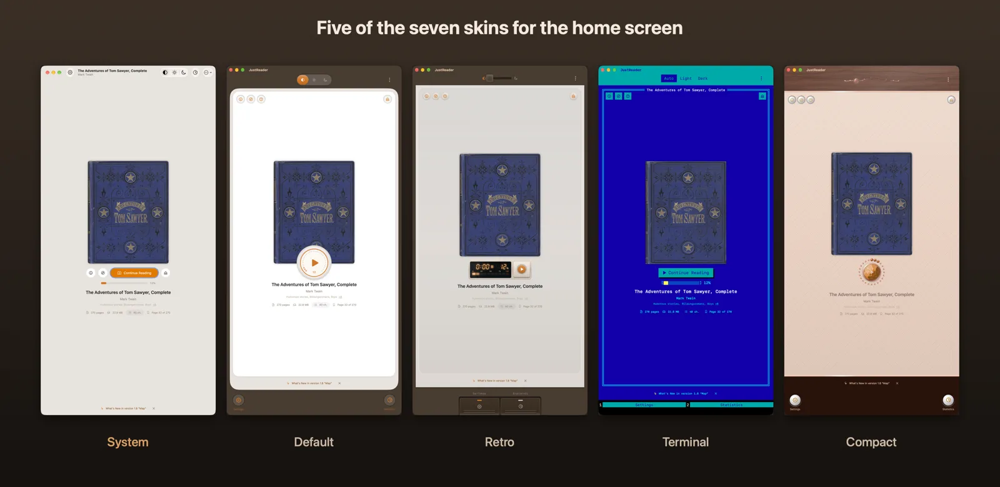
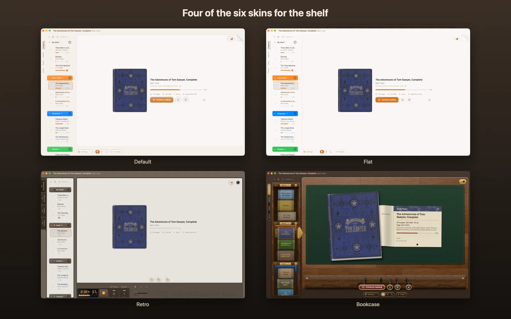
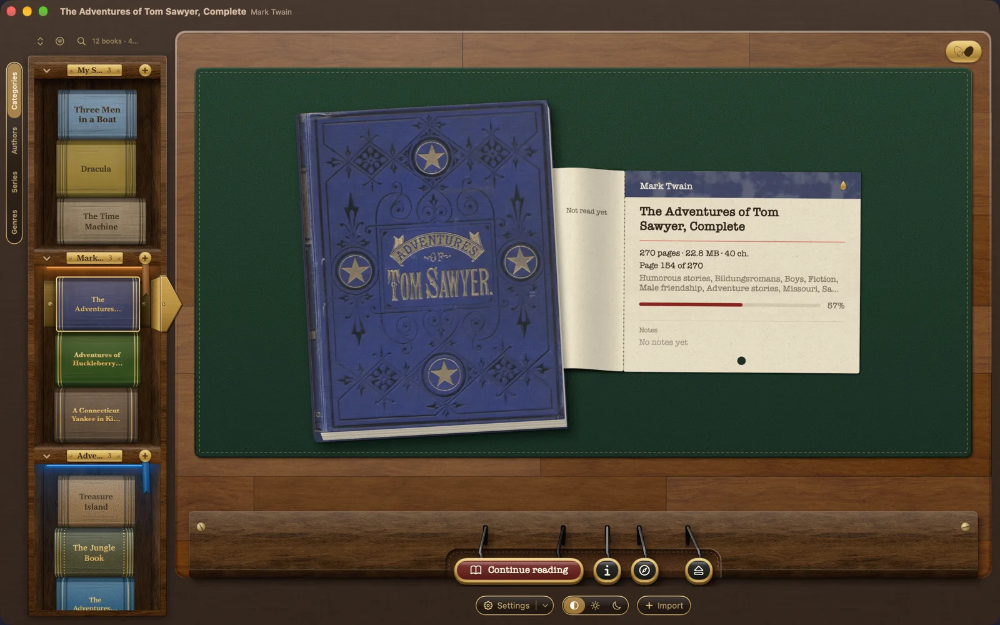
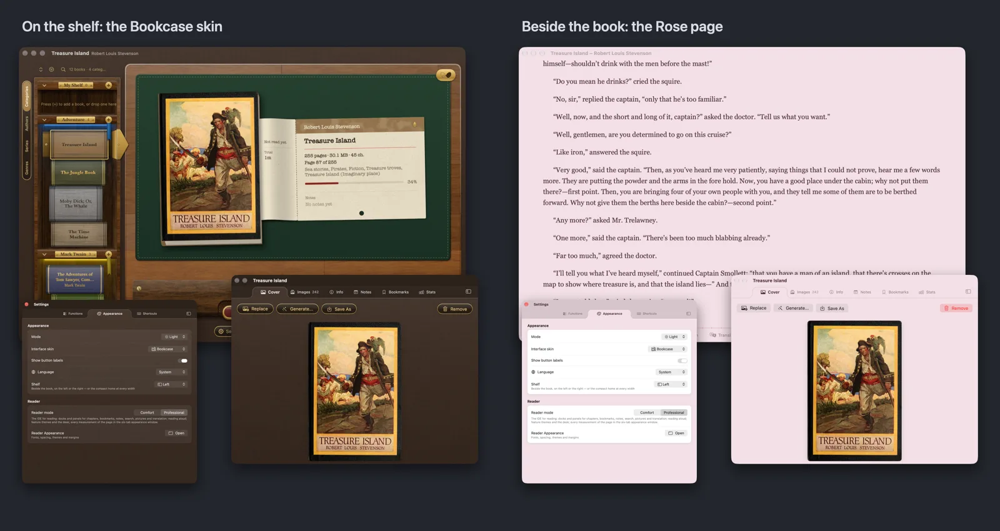
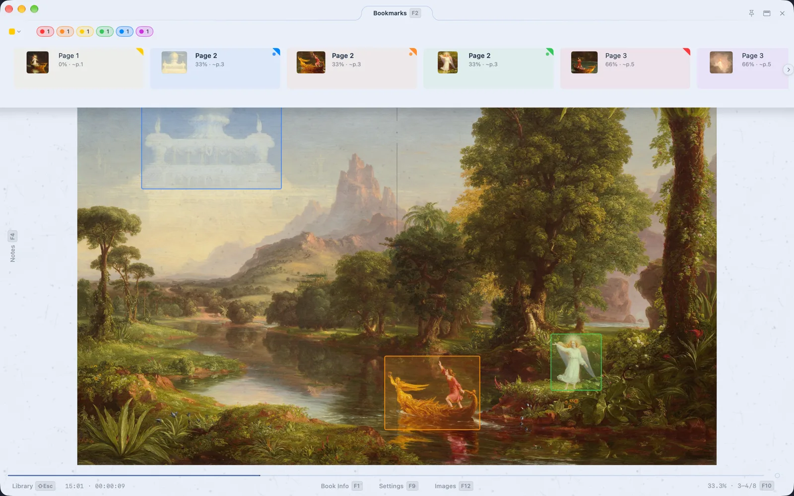
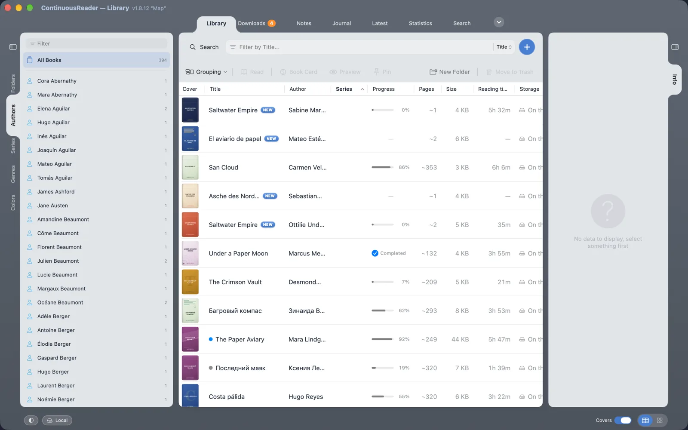
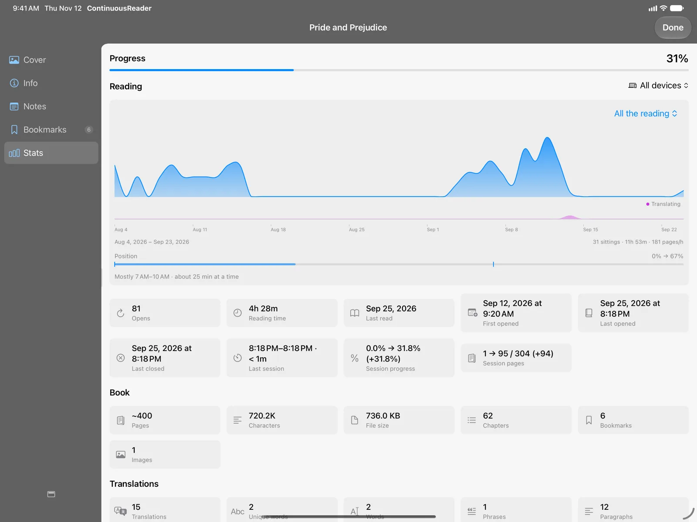

“Dress code” — one butterfly in its spring and its summer dress: a new look and skins
November 2026. Many fixes and improvements, but the main things are skins, text books that read right to left, and marks in books of pictures. Below are the key changes; the full list is in the changelog.
The home screen comes in seven skins on the Mac, the iPad and the iPhone. System follows the platform’s own style: its toolbar, its buttons, its colours. Default comes in two depths, and Flat is minimalism, nothing extra.

Three more add no functions and are there for the mood: Retro is a tape deck with keys and a glowing display, Terminal looks back to Norton Commander, and Compact is a powder compact with pearls. Dialogs, the history and the book card wear the skin you chose.
The shelf has six skins: System, Default in two depths, Flat, Retro and the Bookcase. The iPhone has five of them. Import, OPDS, the history and the book card follow the skin.

The Bookcase is the one with a touch of steampunk. Books stand spine out on wooden shelves, each spine in its cover’s colour. The open book lies on a desk with a catalogue card tucked into it, and brass plates show how far you have read.

The shelf and the page can look nothing alike: a Bookcase shelf and a Rose page, for one. The book card and the settings windows follow the place. Opened from the shelf they wear its skin; opened beside a book they take the page’s theme, paper and ink. Change the theme and the open windows change with it.

In a book of pictures — manga, a comic, a PDF kept as pages — you can highlight part of a page like a marker and add a note. On the Mac mark the area with the mouse, on the iPad and iPhone with a long press. The mark stands in the list of bookmarks together with its fragment.

Text books in Hebrew and Arabic turn their pages right to left; the direction is detected on import and can be changed on the book card. Comfort has bookmarks: add and edit them from the selection menu, and open the list from the strip. On the iPad a button on the bar takes the reader full screen, and Comfort goes full screen too.
The sidebar shows more than folders. Turn it to authors, co-authors, series, genres or colours, and a pick shows books from the whole library. An author’s page opens right there, in the books’ column.

The library is built of three columns the full height of the window: the sidebar, the books and the info panel. The info panel has pages for a book’s details, notes, bookmarks and statistics. On the iPhone the sidebar slides out from the left edge.
The card’s tabs can stand in a column down its side, and the card opens on the tab it was closed on. On the iPhone the tabs slide out as a list from the edge of the screen.

In ContinuousReader and PlainReader the card can generate a cover: several designs to choose from. Any picture from the book can become its cover too. Each author has a field of their own, so a book by two authors stands under each of them. Thanks to Victoria for the letter this began with.
JustReader’s history opens as a table with covers, and a switch loads a book without opening it. A quick menu on the home screen holds the skin, the labels, the cover and the mode switch. JustReader stays free; if you like it, you can buy the author a coffee. The tip unlocks nothing, it is simply a thank-you.
PlainReader’s shelf groups by categories, authors, series, genres or colours, and a filter picks out books not started, started or read. On the Mac and the iPad a quick switcher finds a book by its title or author. The card of a book on the shelf can be edited.
That is the picture. The full list, item by item, is in the changelog.